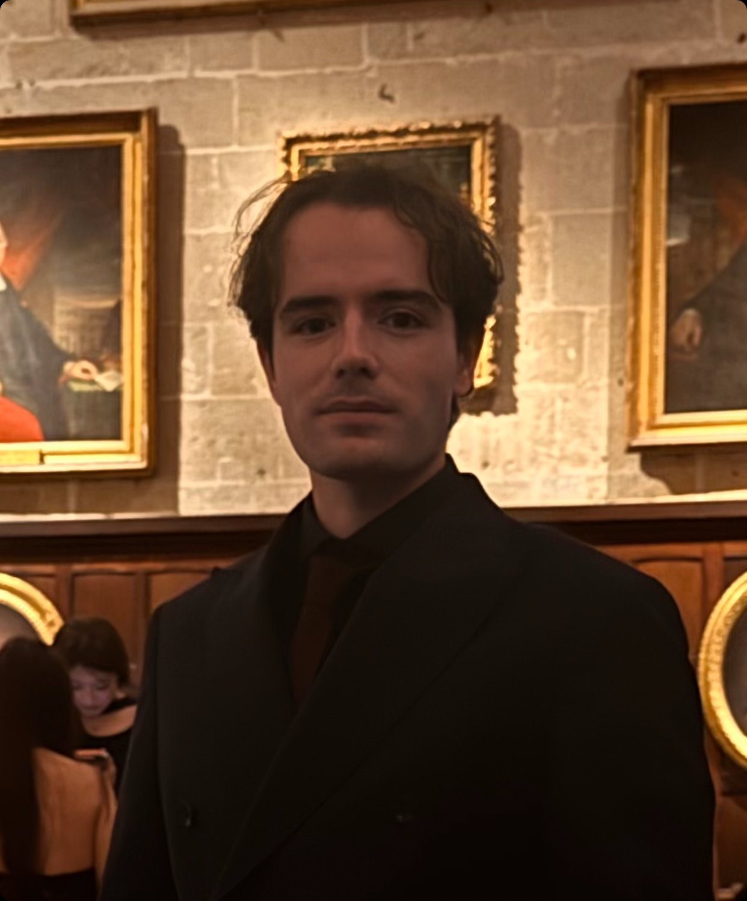

Ph.D. Candidate in Economics
Yohann Berthelin
I'm a Ph.D. candidate in Economics at the University of Lyon (France), supervised by Prof. Dramane Coulibaly and Dr. Lise Clain-Chamosset-Yvrard.
I'm also a Recognised PhD student at the University of Oxford, supervised by Prof. Andrea Ferrero.
My primary research fields are environmental economics and macro-finance.
I have been a quantitative analyst intern at Louvre Banque Privée, working on a €11 billion portfolio.
Contact information: yohann.berthelin [at] cnrs [dot] fr
Research
Work in Progress
Green Macroprudential Policy and Environmental Shocks
Thesis Chapter 1
[Add a short abstract here — 3 to 5 sentences on the question, method, and main result.]
Heterogeneity in the Transmission of European Climate Policy
Thesis Chapter 2
[Add a short abstract here.]
Regional Effectiveness of Climate Policy on CO₂ Emissions
Thesis Chapter 3
[Add a short abstract here.]
Curriculum Vitae